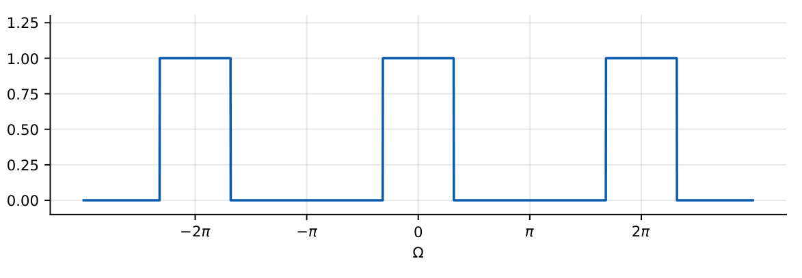
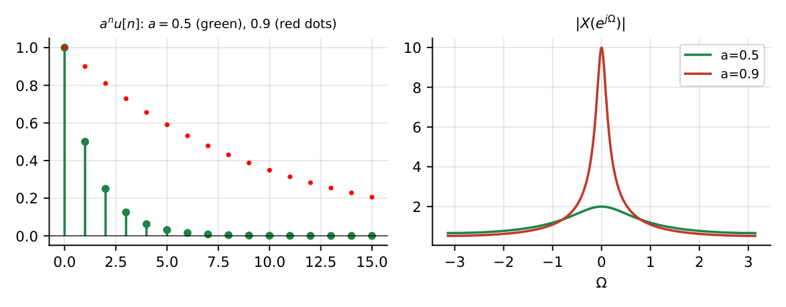
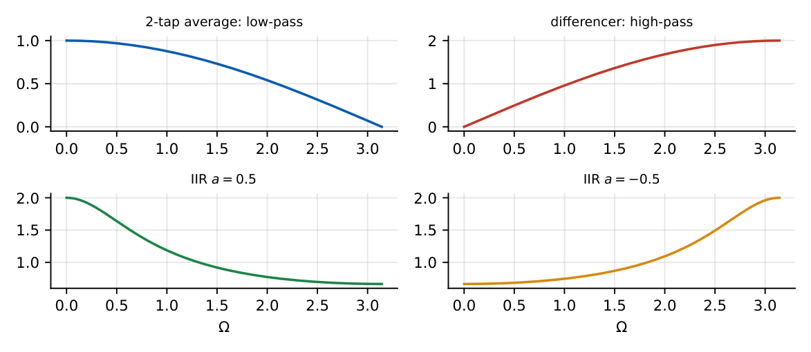

Discrete-Time Fourier Transform
In this chapter
DTFT pairs and properties, \(2\pi\)-periodicity, frequency response from a difference equation (\(H(e^{j\Omega})\) for FIR/IIR), low-pass/high-pass identification, Parseval. About \(1\)–\(2\) marks per paper.
23.1 DTFT definition
\(X(e^{j\Omega})=\displaystyle\sum_{n=-\infty}^{\infty}x[n]e^{-j\Omega n}\), \(x[n]=\dfrac1{2\pi}\displaystyle\int_{-\pi}^{\pi}X(e^{j\Omega})e^{j\Omega n}d\Omega\).
Existence: \(\sum|x[n]|<\infty\) (or square-summable; power signals via impulses). If \(x[n]=x(nT_s)\) then \(\Omega=\omega T_s\).
23.2 DTFT properties
1.4
| Property | Time | DTFT |
|---|---|---|
| Linearity | \(ax+by\) | \(aX+bY\) |
| Time shift | \(x[n-n_0]\) | \(e^{-j\Omega n_0}X\) |
| Frequency shift | \(e^{j\Omega_0n}x[n]\) | \(X(e^{j(\Omega-\Omega_0)})\) |
| Time reversal | \(x[-n]\) | \(X(e^{-j\Omega})\) |
| Conjugation | \(x^*[n]\) | \(X^*(e^{-j\Omega})\) |
| Differentiation in \(\Omega\) | \(n\,x[n]\) | \(j\,dX/d\Omega\) |
| Convolution | \(x*y\) | \(XY\) |
| Multiplication | \(xy\) | \(\frac1{2\pi}\int X(\theta)Y(\Omega-\theta)d\theta\) (periodic conv.) |
| Expansion | \(x[n/L]\) | \(X(e^{jL\Omega})\) |
| Accumulation | \(\sum_{k\le n}x[k]\) | \(\frac{X}{1-e^{-j\Omega}}+\pi X(e^{j0})\sum\delta(\Omega-2\pi k)\) |
| Parseval | \(\sum|x|^2\) | \(\frac1{2\pi}\int_{2\pi}|X|^2d\Omega\) |
23.3 Periodicity of the DTFT
\(X(e^{j(\Omega+2\pi)})=X(e^{j\Omega})\) because \(e^{-j2\pi n}=1\). Only one period (\(-\pi\le\Omega<\pi\)) is needed; low frequencies are near \(\Omega=0\) (and \(2\pi k\)), high frequencies near \(\Omega=\pi\). For real \(x[n]\): \(|X|\) even, \(\angle X\) odd, and \(X(e^{j\Omega})=X^*(e^{-j\Omega})\).

23.4 Important DTFT pairs
1.5
| \(x[n]\) | \(X(e^{j\Omega})\) |
|---|---|
| \(\delta[n]\) | \(1\) |
| \(\delta[n-n_0]\) | \(e^{-j\Omega n_0}\) |
| \(1\) | \(2\pi\displaystyle\sum_k\delta(\Omega-2\pi k)\) |
| \(e^{j\Omega_0n}\) | \(2\pi\displaystyle\sum_k\delta(\Omega-\Omega_0-2\pi k)\) |
| \(\cos\Omega_0n\) | \(\pi\displaystyle\sum_k[\delta(\Omega-\Omega_0-2\pi k)+\delta(\Omega+\Omega_0-2\pi k)]\) |
| \(a^nu[n]\), \(|a|<1\) | \(\dfrac{1}{1-ae^{-j\Omega}}\) |
| \((n+1)a^nu[n]\) | \(\dfrac1{(1-ae^{-j\Omega})^2}\) |
| \(a^{|n|}\), \(|a|<1\) | \(\dfrac{1-a^2}{1-2a\cos\Omega+a^2}\) |
| \(u[n]\) | \(\dfrac1{1-e^{-j\Omega}}+\pi\displaystyle\sum_k\delta(\Omega-2\pi k)\) |
| Rect (\(x=1\), \(0\le n\le L-1\)) | \(\dfrac{\sin(L\Omega/2)}{\sin(\Omega/2)}e^{-j\Omega(L-1)/2}\) |
| \(\dfrac{\sin Wn}{\pi n}\) | \(1\) for \(|\Omega|<W\) (periodic ideal LPF) |

\(x[n]=(0.5)^nu[n]\): \(X=\dfrac1{1-0.5e^{-j\Omega}}\); \(|X|=2\) at \(\Omega=0\) and \(|X|=\dfrac1{1.5}=0.667\) at \(\Omega=\pi\). \(x=\delta[n]+\delta[n-1]\): \(X=1+e^{-j\Omega}=2\cos\tfrac\Omega2e^{-j\Omega/2}\). Parseval: \(\frac1{2\pi}\int\frac{d\Omega}{1.25-\cos\Omega}=\frac1{\sqrt{1.5625-1}}=\frac1{0.75}=\frac43=\sum(0.25)^n\). ✓
23.5 Convolution, multiplication and shifting
Convolution in time is a product of spectra (Chapter 17 methods, done in the DTFT domain): \(Y=XH\). Multiplication by \(e^{j\Omega_0n}\) shifts the spectrum by \(\Omega_0\) (modulation); multiplication by \((-1)^n=e^{j\pi n}\) shifts by \(\pi\), turning a low-pass into a high-pass: \(h_{HP}[n]=(-1)^nh_{LP}[n]\).
23.6 Difference equations and the DTFT
\(\displaystyle\sum_ka_ky[n-k]=\sum_mb_mx[n-m]\Longrightarrow H(e^{j\Omega})=\dfrac{\sum_mb_me^{-j\Omega m}}{\sum_ka_ke^{-j\Omega k}}\).
23.7 Magnitude and phase response
2-tap average \(y=\frac12(x[n]+x[n-1])\): \(H=\cos\frac\Omega2e^{-j\Omega/2}\); \(|H|\) falls from \(1\) at \(\Omega=0\) to \(0\) at \(\Omega=\pi\) (low-pass); phase linear, delay \(\frac12\) sample.
Differencer \(y=x[n]-x[n-1]\): \(H=2j\sin\frac\Omega2e^{-j\Omega/2}\); \(|H|=2|\sin\frac\Omega2|\): zero at DC, \(2\) at \(\pi\) (high-pass).
3-tap average: \(H=\frac13(1+2\cos\Omega)e^{-j\Omega}\), null at \(\Omega=2\pi/3\).
IIR \(y=ay[n-1]+x[n]\): \(|H|=\dfrac{1}{\sqrt{1-2a\cos\Omega+a^2}}\): \(a=0.5\): \(2\) at \(0\), \(0.667\) at \(\pi\) (low-pass); \(a=-0.5\): high-pass.

23.8 Frequency-domain interpretation
A DT sinusoid of frequency \(\Omega_0\) through a stable LTI system gives \(|H(e^{j\Omega_0})|\cos(\Omega_0n+\phi+\angle H)\). The correspondence to analogue frequency is \(\Omega=2\pi f/f_s\): \(\Omega=\pi\) is \(f_s/2\).
Q1. The DTFT of \(\delta[n-3]\) is (A) \(e^{-j3\Omega}\) (B) \(e^{j3\Omega}\) (C) \(3\) (D) \(1\).
Q2. The DTFT is periodic with period (A) \(\pi\) (B) \(2\pi\) (C) \(4\pi\) (D) not periodic.
Q3. The system \(y[n]=x[n]-x[n-1]\) is a (A) low-pass (B) high-pass (C) band-pass (D) all-pass filter.
Answers: Q1 (A). Q2 (B). Q3 (B).
Q4. \(|H(e^{j\Omega})|\) at \(\Omega=\pi\) for \(y[n]=0.5y[n-1]+x[n]\) is (A) \(2\) (B) \(0.667\) (C) \(1\) (D) \(0.5\).
Q5. If \(x[n]\leftrightarrow X(e^{j\Omega})\) then \((-1)^nx[n]\leftrightarrow\) (A) \(X(e^{j(\Omega-\pi)})\) (B) \(X(e^{-j\Omega})\) (C) \(-X\) (D) \(X(e^{j2\Omega})\).
Answers: Q4 (B). Q5 (A).
Q6. \(|X(e^{j0})|\) for \(x[n]=(0.5)^nu[n]\) is .
Q7. The energy of \(x[n]=(0.5)^nu[n]\) computed as \(\frac1{2\pi}\int|X|^2d\Omega\) is (two decimals).
Answers: Q6: \(2\). Q7: \(1.33\).
Q8. True statements: (A) DTFT of a real sequence has even magnitude. (B) \(X(e^{j\Omega})\) of a causal stable system is analytic on the unit circle. (C) Time delay by \(n_0\) multiplies the DTFT by \(e^{-j\Omega n_0}\). (D) The DTFT is aperiodic.
Answers: Q8: (A), (B), (C).
(i) The DTFT is \(2\pi\)-periodic, unlike the CTFT. (ii) High frequency is near \(\pi\), not near \(2\pi\) (which is DC again). (iii) \(\Omega\) is in rad/sample; do not mix with \(\omega\) (rad/s). (iv) Multiplying by \((-1)^n\) shifts by \(\pi\).
T1. DTFT of \(x[n]=\{1,1,1\}\) (\(n=0,1,2\)) at \(\Omega=0\)? T2. DTFT of \(\cos(\pi n/2)\): where are the impulses (in \((-\pi,\pi]\))?
Answers: T1: \(3\). T2: at \(\Omega=\pm\pi/2\), each of weight \(\pi\).
- \(X=\sum x[n]e^{-j\Omega n}\); period \(2\pi\). \(a^nu\leftrightarrow\frac1{1-ae^{-j\Omega}}\); \(\delta[n-n_0]\leftrightarrow e^{-j\Omega n_0}\).
- \(H(e^{j\Omega})=\frac{\sum b_me^{-j\Omega m}}{\sum a_ke^{-j\Omega k}}\). DC: \(\Omega=0\); Nyquist: \(\Omega=\pi\).
- \((-1)^nx[n]\to X(\Omega-\pi)\) (LP\(\to\)HP). Parseval: \(\sum|x|^2=\frac1{2\pi}\int|X|^2\).